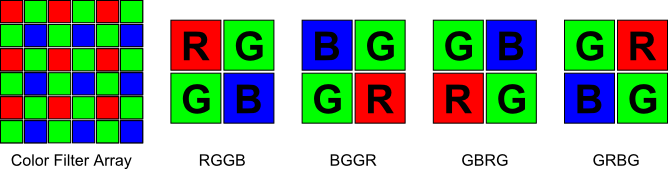
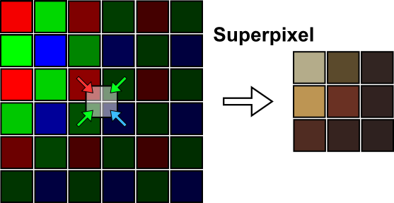
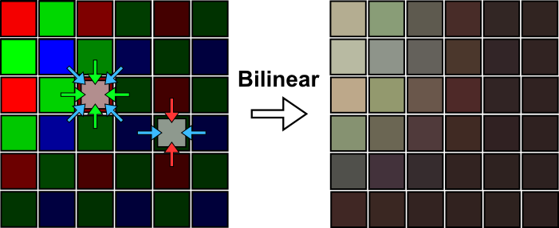
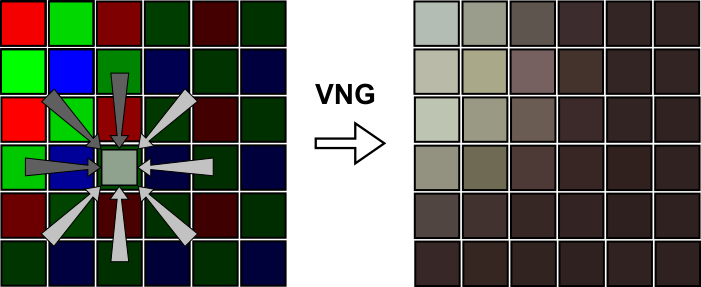

Converts a Color Filter Array (CFA) image into a regular RGB color image. [more]
Categories: ColorSpaces, Preprocessing
Keywords: one-shot color, OSC, color filter array, CFA, Bayer, demosaicing, color recovery
[hide]
[hide]
A majority of one-shot color (OSC) cameras—cameras able to produce a color image from a single shot—work by placing a color filter on top of every sensor pixel. The sensor is still a monochrome detector, but the color filter ensures that each pixel collects only photons from one of the three primary colors. The missing color information is then computed algorithmically from neighboring pixels. This arrangement is called Color Filter Array, or CFA. A typical CFA is composed of red, green and blue filters, although other combinations are possible as well, such as cyan, magenta and yellow.
The process of computing the missing color values from a CFA is called color recovery, color reconstruction, or demosaicing. As the most typical CFA pattern is the Bayer pattern, demosaicing is also often referred to as debayering. The Debayer process implements several methods of color recovery for RGB CFA images. The input image can be either a grayscale image or a color CFA image where each pixel has non-zero values for only one channel. The process creates a new RGB color image with the same view identifier as the input image plus a suffix that can be one of _RGB_SuperPixel, _RGB_Bilinear or _RGB_VNG, depending on the applied debayering algorithm.
[hide]
Specifies the particular arrangement of Color Filter Array used by your camera. There are four possible arrangements/patterns of how red, green and blue pixels can be placed on the camera sensor. The number of green pixels is always doubled compared to red or blue pixels. This is because the human eye is more sensitive to green light, and most OSC cameras have been designed for daylight use. For normal daylight RGB images the green channel usually is a good approximation to the luminance component, where our vision system perceives most of the detail. The following image shows an example of a CFA matrix and the four supported CFA patterns.
Note— In case the resulting image still shows something like a Bayer pattern, it is very likely that the selected Bayer/Mosaic Pattern does not match the actual CFA pattern of the image.
Chooses the method used to recover full pixel colors from a CFA image.
Superpixel
The Superpixel method is very straightforward. It takes four CFA pixels (2x2 matrix) and uses them as RGB channel values for one pixel in the resulting image (averaging the two green values). The spatial resolution of the resulting RGB image is one quarter of the original CFA image, having half its width and half its height. This method is very fast. It has virtually no artifacts and is very well suited for demosaicing oversampled images (images where the sensor resolution is considerably higher than the resolution of the optics).
The following image schematically shows how the method works and the output it produces.
Bilinear
The Bilinear interpolation method keeps the original resolution of the CFA image. As the CFA image contains only one color component per pixel, this method computes the two missing components using a simple bilinear interpolation from neighboring pixels. This method is very fast, but it tends to smooth sharp edges and generates color artifacts around edges. In general, other methods usually produce better results.
As the method works on a 3x3 pixel matrix, it can't directly recover colors on one-pixel wide image borders. The current implementation copies border pixel values from neighboring pixels.
The following image schematically shows how the method works and the output it produces. It also shows the difference between the situation in a green pixel and red/blue pixels.
VNG
The VNG method stands for Variable Number of Gradients. It works on a 5x5 pixel neighborhood around each source pixel. The method first computes intensity gradients in the eight directions around the current pixel. Then it computes a threshold and takes only gradients below this threshold. In the last step, the missing color components for the pixel are interpolated from neighboring pixels along the directions of the remaining gradients. This method preserves edges much better than bilinear interpolation. It also produces much less color artifacts and less chrominance noise.
As the method works on a 5x5 pixel matrix, it can't directly recover colors for 2-pixel wide image borders. The current implementation copies border pixel values from neighboring pixels.
The following image schematically shows how the method works and the output it produces. Gray arrows represent gradients with too high values, which have been discarded for color interpolation.
Saves the current values of the Bayer/Mosaic Pattern and Debayer Method parameters so that they will be restored each time you launch the Debayer process, or when you click the Restore from Default button.
Restores the settings previously stored using the Save as Default button.
Copyright © 2011, Sander Pool, Zbynek Vrastil